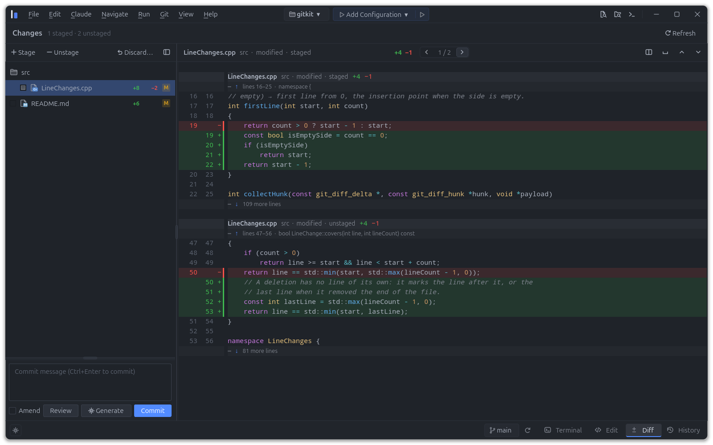

It understands what you are looking at
Claude already knows which file is open, where the cursor is, what is selected and which errors are underlined. Type “fix this” and it knows what you mean: no more pasting code or spelling out file paths.
Free and open source code editor
Most editors were designed for a human typing code, and AI was added later: a chat panel on the side, or an agent in a terminal that cannot see your editor. Duet starts from the other end: a full code editor built around Claude Code, where Claude sees what you see, and you see everything Claude changes.
Open source · Linux, Windows and macOS

Principles
In Duet, Claude is not a guest of the editor: the editor was designed for it. Three things follow.
Claude already knows which file is open, where the cursor is, what is selected and which errors are underlined. Type “fix this” and it knows what you mean: no more pasting code or spelling out file paths.
Claude does more than suggest text. It goes to definitions, renames a function everywhere it is used, runs the build and reads the errors, shows a diff, draws a diagram — with the same tools as you. Nothing changes your repository without your approval.
Every change Claude makes appears before your eyes, file by file. A snapshot of the project can be taken before each request, and one click undoes it all. You delegate without risk.
Diagrams
When Claude explains a module, a flow or a refactoring plan, a wall of text scrolling by in a terminal is the hardest way to follow it. In Duet, Claude draws instead, and the diagram becomes a space you share: you both read it, point at it and change it. The conversation goes both ways.

Agent tools
An agent in a terminal reads and rewrites text. In Duet, Claude works through the editor itself: the language servers, the refactorings, Git, the terminals and the diagrams. The same tools as you, with the same precision.
Review
Open files reload as Claude edits them, and the Diff view updates after each step. Stage by file, hunk or line, and let Claude write the commit message in the style of your history.
Before committing, a separate, read-only reviewer can go over the staged changes and leave its findings right in the diff.

Editor
Over the years, editors have piled up panels, menus, settings and extensions, until using one became a skill of its own. Duet makes a clean sweep: it keeps what a professional really needs, in a few clear places. And what you would once have hunted for in a menu, you can simply ask Claude.
Recipes
Recipes create a ready-to-use project. Each recipe brings the right tools, the right configuration, and what Claude needs to know to work in that project.
Get started
Duet is open source (GPL v3) and runs on Linux, Windows and macOS. It is written in C++ to be fast, and it uses your own Claude Code installation without touching your configuration.
# Build and run from source
git clone https://github.com/EricPonthiaux/Duet.git
cd Duet
cmake --preset default
cmake --build --preset default
./build/bin/duet [project-folder]Requires Qt 6.10+, CMake 3.24+, Ninja and a C++23 compiler (GCC 13+, Clang 17+, Apple Clang 16+ or MSVC 2022). The other dependencies are downloaded and built on the first configuration. See the README for the details.
For developers who want the power of an AI assistant without giving up a serious editor, or control of their code.